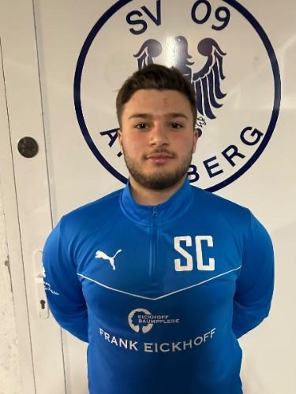
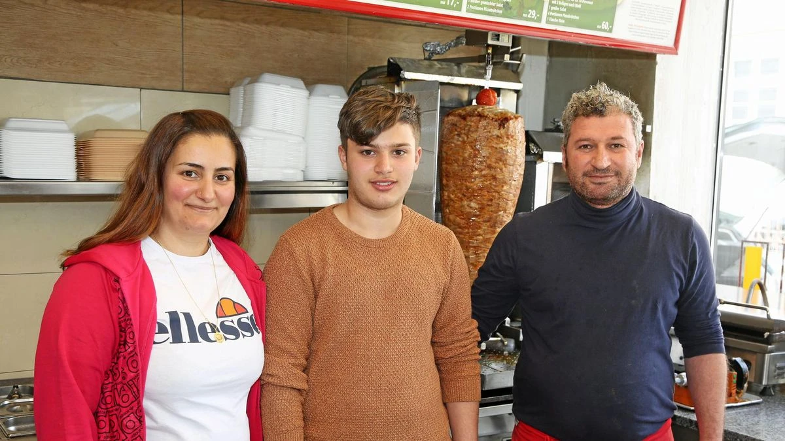

Name:
Siyar CobanogluGeburtsdatum:
27. März 2007Nationalität:
DeutschKurde
Wohnort:
ArnsbergRumbeck
Familie:
Vater: Ahmet CobanogluMutter: Derya Mamak
Geschwister: Beser, Diyar, _____

Wie kam er zu Fußball:
Schon als er klein war, hat Siyar mit dem Fußballspielen begonnen. Seitdem hat er großes Interesse an diesem Sport entwickelt und das Meiste von seinen Trainern gelernt.Sein aktuelles Leben:
Siyar lebt aktuell in Arnsberg und besucht dort das Gymnasium Laurentianum. Er spielt weiterhin aktiv Fußball und arbeitet nebenbei im Dönerladen seines Vaters, dem „Munzur Grill“.

Er spielte bei den Vereinen:
JSG ArnsbergSV Arnsberg09
DJK GW Arnsberg
TuS Rumbeck
TuS Bruchhausen
TuS Niedereimer
BW Gierskämpen (Jetzt)
Link zu Fußball.de